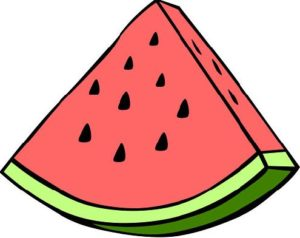
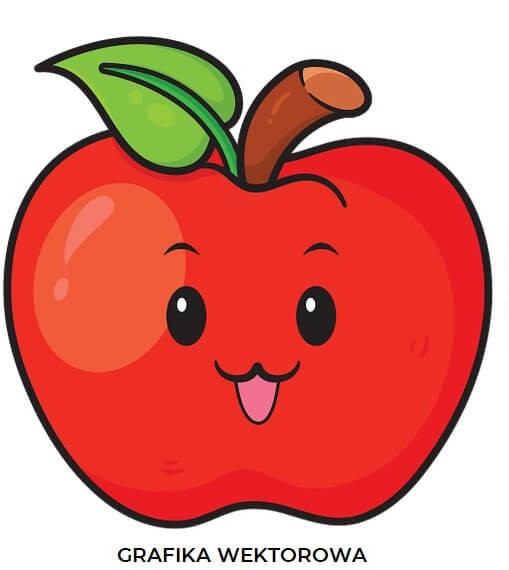
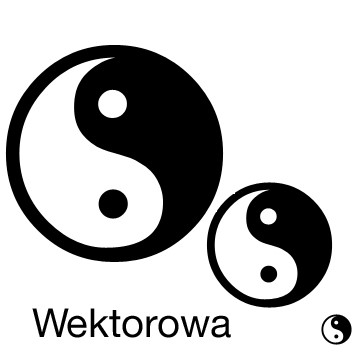
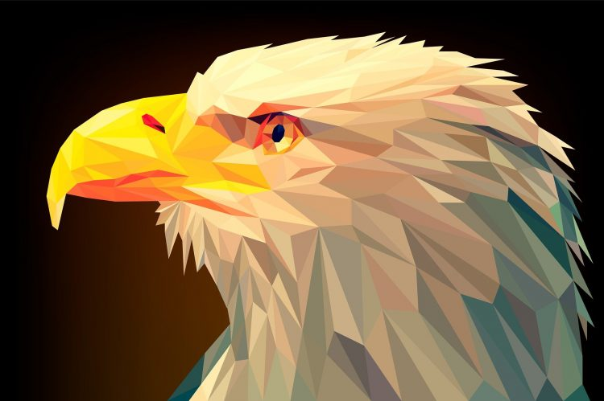
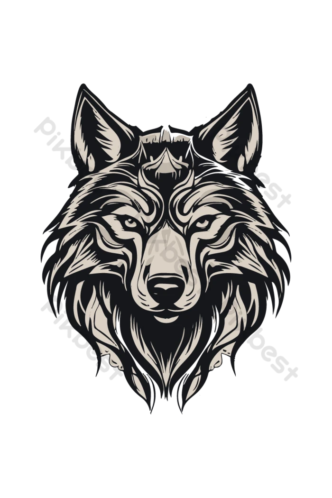

Grafika wektorowa to technika tworzenia obrazów za pomocą figur geometrycznych, takich jak linie, krzywe, wielokąty i okręgi, które są definiowane matematycznie. Dzięki temu obrazy wektorowe są skalowalne bez utraty jakości.

🧩 Cechy grafiki wektorowej:
1. Zbudowana z figur geometrycznych.
2. Możliwość łatwej edycji.
✅ Zalety grafiki wektorowej:
1. Skalowalność bez utraty jakości.
2. Mały rozmiar pliku.

❌ Wady grafiki wektorowej:
1. Słabe odwzorowanie realistycznych detali.
2. Ograniczenia w efektach specjalnych.

🎨 Programy do grafiki wektorowej:
1. Adobe Illustrator
2. Inkscape

🎯 Zastosowania grafiki wektorowej:
1. Logo i identyfikacja wizualna
2. Druk wielkoformatowy i DTP

🗂️ Rozszerzenia plików grafiki wektorowej:
1. .SVG, .AI, .CDR, .EPS, .PDF
2. Scalable Vector Graphics, Adobe Illustrator, CorelDRAW, Encapsulated PostScript, Portable Document Format